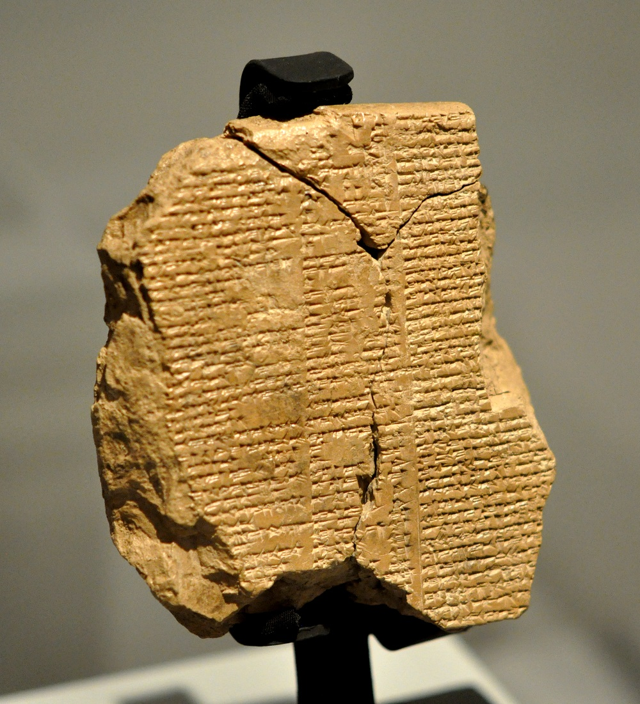
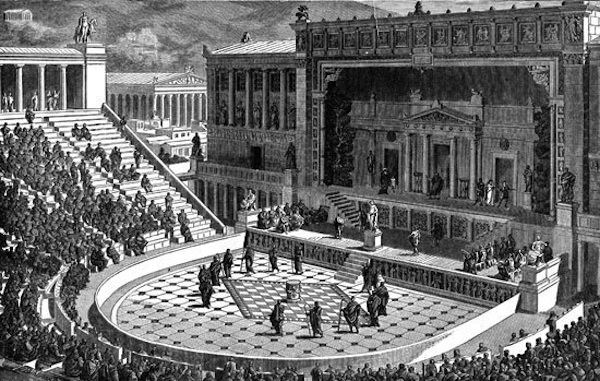
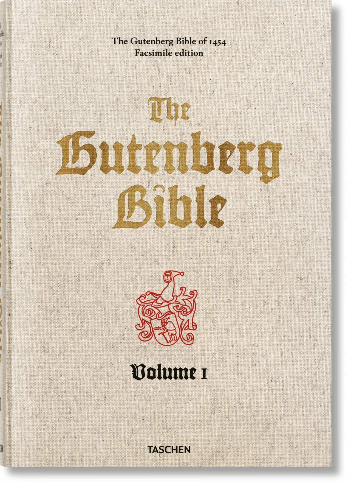
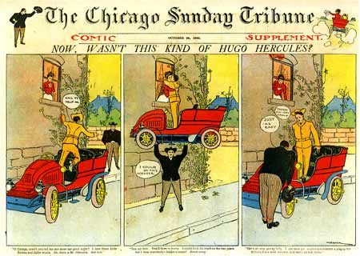
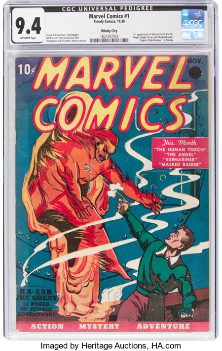
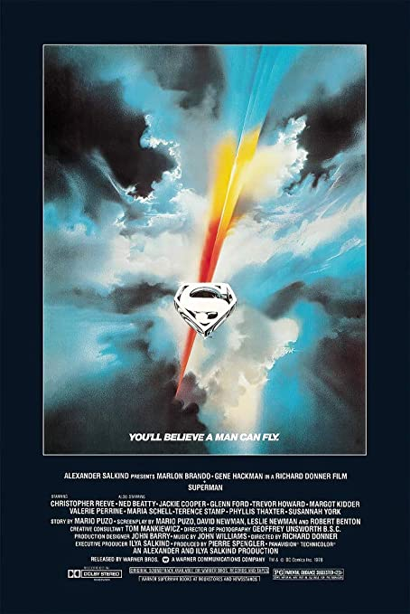

Stories reflect the very essence of what it means to be human. They have the ability to stoke our imaginations, form bonds with new characters, and transport us to new worlds. Since the inception of written language (c. 3200 BC), humans have been able to put pen to paper—or rather, chisel to tablet—and create stories capable of captivating and transporting their readers. Although spoken storytelling has almost certainly outlived the existence of written language, this virtual exhibit will focus exclusively on tangible storytelling media. This includes media such as books and film.
Many believe that storytelling is a gift given only to the educated and wise. Truth is, every single person has a story to tell. The beauty of storytelling is that it allows people of all ages, ethnicities, and religions to come together and share what's on their mind. Stories serve a number of purposes in our daily lives. They have the ability to help us imagine, remember, laugh, cope, and understand others. Since stories hold such an immense potential, the concept of storytelling is nearly ubiquitous among every culture and civilization. Virtually every civilization has its repertoire of folk tales, myths, legends, and epics. And it’s not as if those are the only stories to focus on; people from all corners of the Earth are still coming up with new stories to tell.
Stories have remained an essential part of nearly all cultures, partly thanks to the innovation in the storytelling media themselves. There are a multitude of ways of telling a story, each holding equal potential to captivate audiences. What first started off as spoken folk tales has now become novels, comic books, television shows, movies, etc. Such innovations have ushered entire shifts in cultures, such as the invention of the printing press’ ability to spread religious texts or digital video overwhelming the online social media landscape.
The superhero archetype is a cornerstone of storytelling, well enjoyed by a broad audience. Superheroes are characters which embody the greatest traits of humanity: strength, nobility, selflessness, etc. They typically possess some power which they use to combat evil. Nowadays, it seems superheroes dominate every facet of pop culture, especially cinema. The concept of the hero character is nearly as ubiquitous as storytelling itself. As such, this virtual exhibit aims to recount the most notable storytelling media alongside prominent examples featuring strong protagonists or heros.
Written LiteratureEpic of Gilgamesh (c. 2000 BC)unknown author |
The Epic of Gilgamesh is often considered the oldest piece of notable literature. The original texts were written some time during 2nd millenium BC in ancient Mesopotamia's primary language: Akkadian.1 Since paper and ink were not yet invented, the ancient Akkadians inscribed the entire story in a collection of stone tablets. The epic recounts the tragic story of Gilgamesh, king of Uruk, and Enkidu, a creation of the gods and friend of Gilgamesh. They undertake several dangerous adventures, resulting in the death of Enkidu. In response, Gilgamesh attempts to search for the secret of immortality.2
|
|
|---|---|---|
Stage PlayThe Persians (472 BC)by Aeschylus |
The Persians by Aeschylus is what is believed to be the oldest surviving stage play manuscript. Although The Persians is the second work in a trilogy of plays, the other two works have been lost to time.1 It was written and first performed in 472 BC in the Athens theatre. It glorifies the Battle of Salamis which won by the Greek against the Persian naval armada in 480 BC.2 The stage play harkins back to spoken storytelling while incorporating more complexity with multiple actors and a dynamic stage. It involves the audience in both auditory and visual stimuli,2 something which traditional written works simply cannot. The concept of theater is an artform different from traditional written works. While the script itself is written, multiple people must work together in order to bring the story to life. The proper performance of a stage play involves the talents of multiple people, whether it be writer, actor, or stage hand.
|
|
Printed BookThe Gutenberg Bible (c. 1450 AD)by Johannes Gutenberg |
The Holy Bible is one of—if not—the most influential written works in the entirety of written history. It spans thousands of years of humanity's existence, forming the basis of many cultures and societies across the world. In its original form, the Bible existed as two distinct written works: Old Testament and New Testament. The original texts for the Old Testament were inscribed onto stone tablets circa 1200–165 BC in Hebrew. The New Testament was written soon after Jesus' death in 0 AD in the Koine Greek. The Gutenberg Bible is the first ever printed work by Johannes Gutenberg's printing press.1 The printing press ushered a complete revolution in story telling medium, turning books from a thing of luxury to a mass-produced and easily accessible item.
|
|
Comic StripChicago Tribune (1902)by Wilhelm Körner |
While the comic strip form has existed for some time prior, Hugo Hercules is considered by many to be the first appearance of a proper superhero in a comic.1 Written for the Chicago Tribune in 1902, it features the hero helping a man reunite with his lover by lifting an entire automobile. In other comics, Hugo can be seen using his superhuman strength to help ordinary people around town. The Hugo Hercules series of comics only had a brief run beginning September 7, 1902 and ending January 11, 1903.2 Despite its short run, it serves as a catalyst of sorts for future comic book and superhero characters.
|
|
Comic BookMarvel Comics #1 (1939)by Marvel Worldwide Inc. |
Marvel Comics #1 marks the beginning of Marvel's rise to dominance in western popular culture. The comic book is an extension of the comic strip and an iteration of traditional novels, combining text with hand-drawn imagery. It reflects a more modern medium of storytelling in comparison to traditional text-only novels. This particular comic book is the first ever published by Marvel Comics, featuring both the android Human Torch and the Sub-Mariner.1 While both of these heroes aren't particularly well known by audiences today, they are predecessors to beloved characters such as Iron Man and Spider Man
|
|
FilmSuperman (1978)dir. by Richard Donner |
Superman (1978) directed by Richard Donner is the first appearance of a super hero in a big-budget feature film. It was a huge success, grossing $300 million at the box office.1 It is also well-liked by critic and audience alike, scoring a 96% from critics and 86% from audiences on Rotten Tomatoes.2 Even Superman's creators, Jerry Siegel and Joe Shuster, gave a positive critique of the movie. Like stage plays, the film medium combines both auditory and visual stimuli for the purposes of storytelling. However, unlike stage plays, all the performances are recorded and comitted to film, able to be duplicated onto new film reels and distributed. In addition, editing in post-production opens doors to countless possibilities such as visual effects which Richard Donner made use of in this film. Donner's Superman marked the first of many big-budget superhero films to come, serving as the catalyst for future films such as Paul Verhoeven's Robocop (1987) and Tim Burton's Batman (1989).3
|
Brintnall, Kent L. “Review: Action Speaks Louder: Violence, Spectacle, and the American Action Movie, by Eric Lichtenfeld.” Film Quarterly 60, no. 4 (2007): 84–85. https://doi.org/10.1525/fq.2007.60.4.84.
Brown, Shelby. “A Guide to Aeschylus's ‘Persians.’” Getty Iris, November 2, 2020. https://blogs.getty.edu/iris/a-guide-to-aeschylus-persians/.
Britannica, T. Editors of Encyclopaedia. “Epic of Gilgamesh.” Encyclopedia Britannica, Accessed April 18, 2022. https://www.britannica.com/topic/Epic-of-Gilgamesh
Britannica, T. Editors of Encyclopaedia. “Persians.” Encyclopedia Britannica, Accessed April 18, 2022. https://www.britannica.com/topic/Persians-play-by-Aeschylus.
“Epic of Gilgamesh - Epic Poem Summary: Other Ancient Civilizations.” Ancient Literature, January 11, 2022. https://www.ancient-literature.com/other_gilgamesh.html.
“The Gutenberg Bible.” The gutenberg bible. Accessed April 18, 2022. https://www.hrc.utexas.edu/gutenberg-bible/.
Holtz, Allan. American Newspaper Comics an Encyclopedic Reference Guide. Ann Arbor, Michigan: University of Michigan Press, 2012.
“Marvel Comics (1939) #1: Comic Issues.” Marvel. Accessed April 18, 2022. https://www.marvel.com/comics/issue/10008/marvel_comics_1939_1.
“Superman (1978).” Box Office Mojo. Accessed April 18, 2022. https://www.boxofficemojo.com/title/tt0078346/.
“Superman: The Movie.” Rotten Tomatoes. Accessed April 18, 2022. https://www.rottentomatoes.com/m/superman_the_movie.
“William H. D. Koerner.” lambiek.net, July 1, 2017. https://www.lambiek.net/artists/k/koerner_whd.htm.